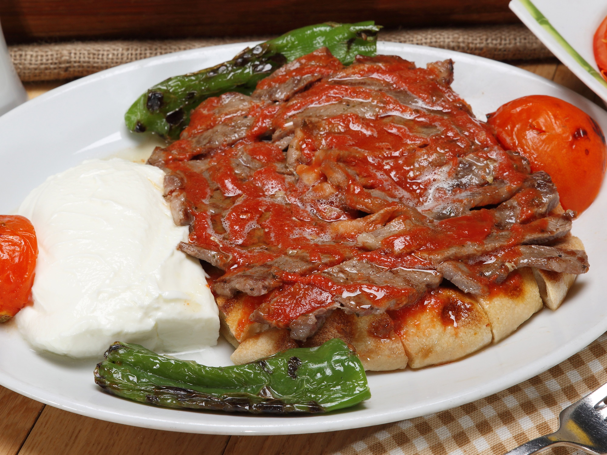

Iskender

A Delicious Iskender Kebab From Bursa
Iskender kebab is a Turkish dish that consists of sliced döner kebab meat topped with hot tomato sauce over pieces of pita bread, and generously slathered with melted special sheep's milk butter and yogurt.
It can be prepared from thinly and carefully cut grilled lamb or chicken. Tomato sauce and melted butter are generally poured over the dish live at the table, for the customer's amusement.
Ingredients
-
400 g beef
-
2 tablespoons olive oil
- 2 tablespoons of butter
- Salt
- Black Pepper
- Turkish Pide
- Sauce
- Green Peppers
Recipe Steps
- Wrap the beef tenderloin in cling film and put it in the freezer. Refrigerate for about 1-1.5 hours. Take the meat out of the freezer when it is hard enough to cut thin slices with a knife. Get the ingredients on the counter.
- Cut thin leaf-shaped slices with a knife. Take the meat in a non-stick saucepan and cook it with the lid closed, without stirring, until it releases its juice and absorbs it again. Add olive oil and butter to the pan and fry. Season with salt and pepper and remove from the heat.
- For the sauce, heat the olive oil and butter in a saucepan. Add tomato puree and hot water and let it boil. When it starts to boil, add salt, mix and remove from the stove.
- Spread the lightly fried Turkish pide (pita) on the serving plate. Pour tomato sauce on it and place the fried meat. Melt the butter and drizzle over the meat.